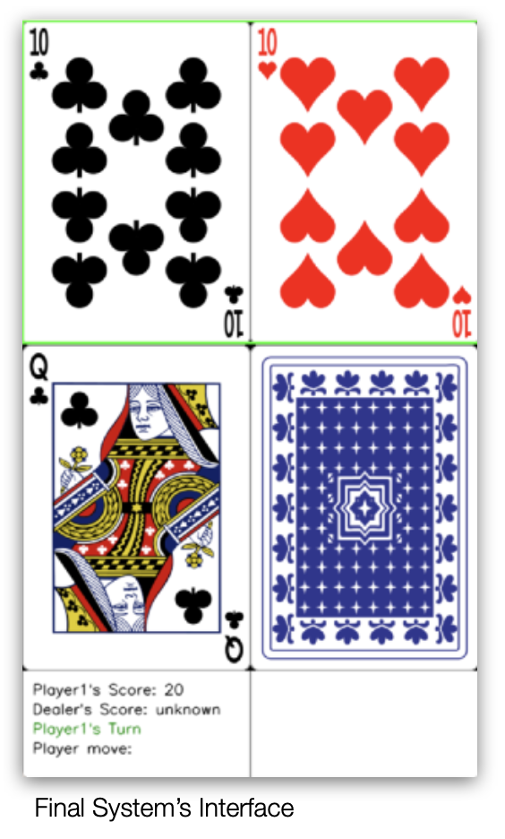
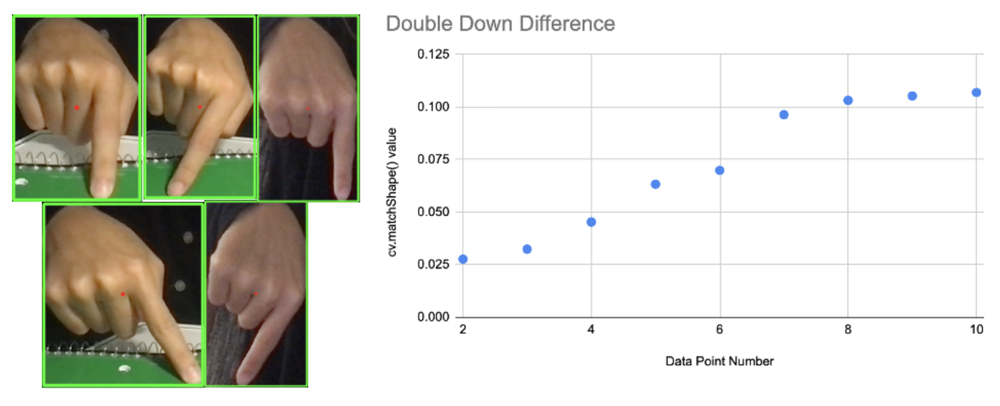
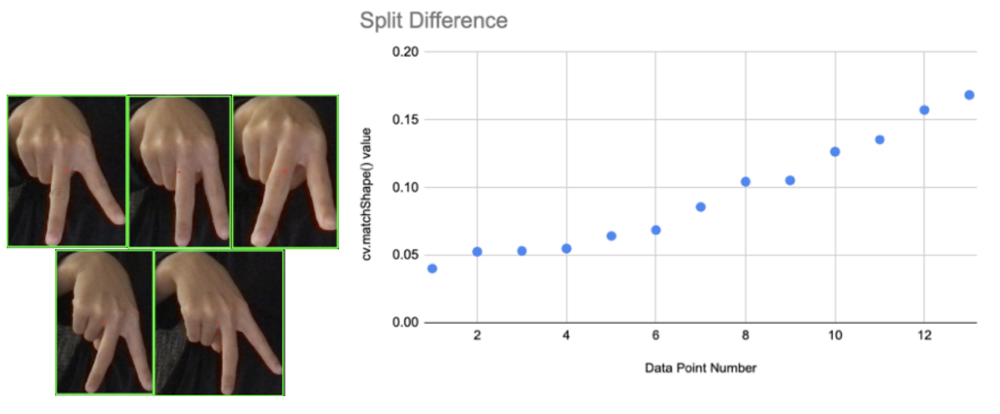

Project BlackJack
Summary of the System
The system is a 1-player Blackjack game that uses the user's hand gesture as the input. Once the user starts the game, they are asked to make a hand pose for “double down” and “split”, which will be saved in the system. Then, the game begins. Game play of blackjack is shown via computer screen, and every time the user has to make a decision, and the camera will turn on and the system will recognize the user’s decision, and continue the game depending on that input.

Overview
Recognizable Gestures
- Dynamic Gesture
- Hit: Double tap (recognized by the vertical movement of the hand)
- Stand: Horizontal waving of the hand (recognized by the horizontal movement of the hand)
- Static Gesture
- Double Down: make number 1 with the finger, and place it in the table. (recognized by the hand pose and lack of movement of the hand)
- Split: make a V shape with fingers by separating index finger and middle finger, and place it in the table. (recognized by the hand pose and lack of movement of the hand)
Domain Engineering
The system works in most settings where there is sufficient light, background is stationary, and the color of the table and the background is not too similar to the user’s skin color. One way to ensure that the system works well is to turn off the lights in the room, block natural lights, and only have one light source (ex. lamp) that shines the light at the user’s hand. User can also check if the system is working well. When first starting the system, it will show the binary image that is processed by the computer, and the user can adjust the background and lights to make sure that the binary image shows and tracks the hand clearly before starting the game play.
Packages Used
I used OpenCV package to access the computer’s camera, detect skin, draw contour, compare the contour to check if the real-time hand matches the key pose, etc. I used numpy package to handle the blackjack display. I used random package to shuffle the deck in the blackjack game, and the time package to delay actions in blackjack game to allow the users to follow the game in a speed that they would be used to in the real-life game.
Finding the Closest Hand Contour
I noticed that the system does not recognize the gesture well if the wrist is slightly turned to a different angle, etc. Therefore, I made it so that the system records 3 contours for each gesture: one with low angle, one with medium angle, and one with high angle. All three should be facing the camera directly, and any attempted gestures must face the camera directly as well for better recognition. When finding the closest hand contour, the system would simply search through all recorded capture and if one of the three “split” happens to be the closest, it will return “split” and vice versa.
Key Gesture Thresholds
Key gesture threshold is used in the identification of “split” and “double down”. A function (cv2.matchShape) is called to compare the difference between the real-time hand pose and key gestures that we are looking for (“split” and “double down”). If the difference is smaller than a threshold, the real-time hand pose can be identified as that key gesture. If multiple key gestures are under the threshold, the real-time hand pose is identified as the one with the smallest difference. If none of the key gestures are under the threshold, the real-time hand pose is identified as “none”.
The system was first built using the same threshold for all key gestures. However, I noticed that some gestures are harder to be recognized than others. Therefore, I conducted a small survey. I gestured “double down” in various ways rotating my wrist, and recorded its difference to the “double down” contour. Below are the example poses of “double down”, and the result plot. As you can see in the plot, all datapoint fell below 0.12. Therefore, I decided to make the key_gesture_threshold for “double down” 0.12.
Split was more difficult to recognize. I was able to vary not only the wrist, but the distance between the two fingers. The little twists and small adjustments made the split difference higher on average. Below are pictures of sample “split” poses and the graph. Since most points fell under 0.15, I decided to make the threshold 0.15.
Stay Still Threshold
For a stationary gesture to be recognized, the hand pose should stay still for Stay Still Threshold amount of time. The threshold should not be too short that it recognizes a gesture that it not intended to be recognized, nor too long that it makes the user wait too much. I determined this threshold by first setting it to about 2 seconds, and gradually lowering it while using the system. I stopped lowering the threshold when the system recognized a stationary gesture when I was not completely still posing and waiting for it.
Hit/Stand Time Threshold
This threshold is responsible for enforcing that the up/down, left/right motion happens in a timely manner. If stand/hit stage does not go from one stage to the next within this threshold, stand/hit stage will be reset to 0. I noticed that the gesture “stand” had a lot of false positives, because the user can move their hand around unintentionally, and it had vertical movement component to it. When the user intends to and gestures “hit/stand”, they do so in a quick and tight manner (ex. stand is a quick left right left right instead of arm reaching for something in the table). This information can be used to determine hit/stand from unintentional hand movements. I started from high threshold and gradually lowered the threshold, until the system was not recognizing a true “hit” or “stand”. If this threshold is too low, there simply is not enough time for the stages to move from one to the next, hence the dynamic gestures will not be recognized.
Hand Dir Threshold
Hand direction is recognized when the user moved their hand “significantly” from their last position. I computed the movement from position A to position B by the movement in the center point of the bounding rectangle of their hand contour. That “significantly” is determined by this threshold. When I was testing the system by myself, I would move my hands precisely, so the system worked well with low hand dir threshold of 20. However, when I was testing the system, I noticed that many people struggled because while they move their hand vertically, gesturing “hit”, it was often recognized as “stand” since the vertical movement of the hand usually accompanied horizontal movement. Therefore, I decided to make two different threshold for detecting vertical movement and horizontal movement, and set the horizontal hand direction threshold to 40. When I made this change, a participant who could only get the system to correctly recognize “hit” 1 out of 10 times was now able to get the system to correctly recognize “hit” 10 out of 10 times, and “stand” 10 out of 10 times.
Hand Going [Up/Down/Left/Right]?
The “hand going [up/down/left/right]?” decision function in the flow charts above utilizes the information of past record of hand directions. If the vertical direction was “up” 95% of the times in the past [hit_time threshold] records, and if the horizontal direction was not “left” nor “right” 70% of the times in the past [hit_time threshold] records, the system will say that the hand was going up. Vice versa for “down”. However, for “hand going left/right”, the system will not check if there was a vertical component to the movement. This is because by observing the participants, I noticed that it is very hard to not move vertically while moving horizontally, especially since the hand is off the table. Also, the shape of your hand changes during the gesture “stand” which means that there is movement of the center of the hand contour independent of the hands’s movement. The hand direction is largely dependent in the center point of the hand contour, so it is very rare for even the intended “stand” to have no vertical movement component. Below is a capture of intended “stand”. We can see that the center of the bounding rect moves up as the hand moves the the right.
For full documentation, click the button below.
Full Documentation Django Implementation